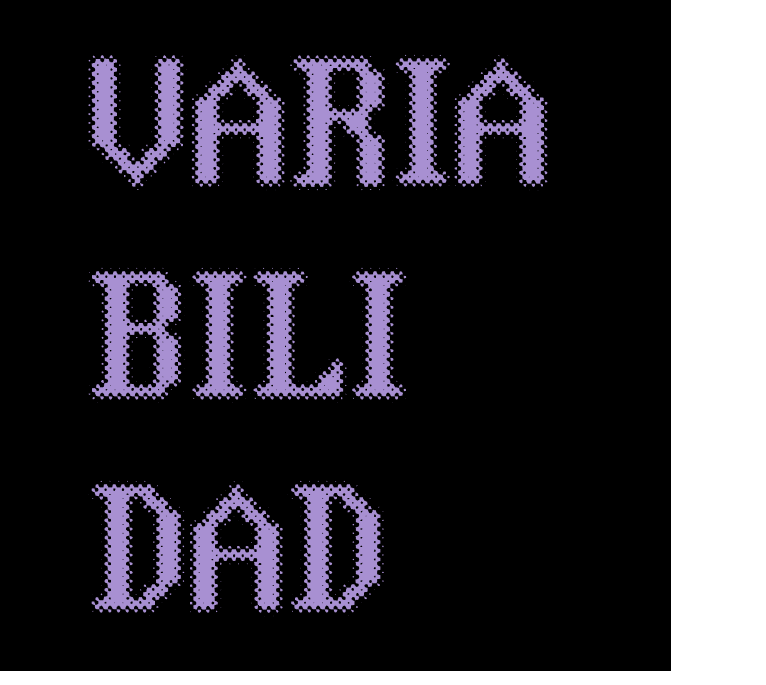
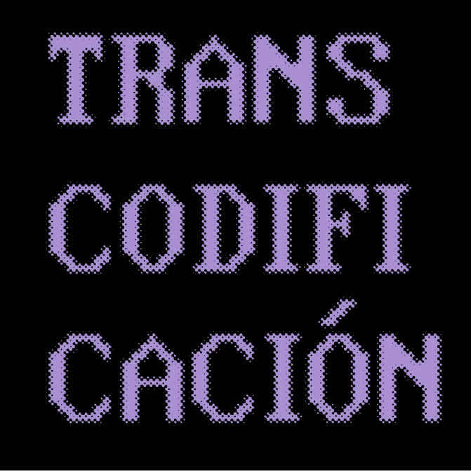

Se puede percibir en los elementos utilizados de creación, las tintas fotosensibles y la proyección laser estas herramientas funcionan de manera independiente, pero contribuyen al resultado final

Se ve representada en la capacidad que hay para proyectar diversos diseños y patrones sobre los textiles, permitiendo una alta gama de diseños sobre un mismo material

Se ve representada en la capacidad que hay para proyectar diversos diseños y patrones sobre los textiles, permitiendo una alta gama de diseños sobre un mismo material